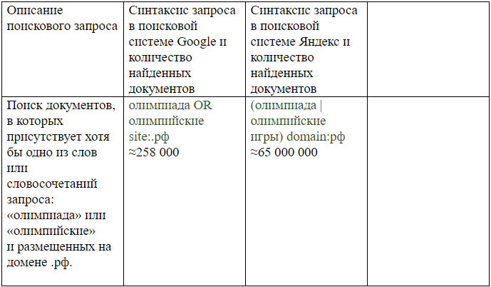

Мировые информационные ресурсы и сети
Преподаватель: Солдатов А.В.
Основная цель освоения дисциплины: знакомство студентов с определениями, классификацией и характеристиками мировых информационных ресурсов, формирование системного представления о структуре информационных ресурсов и методах поиска информации.
Предусмотренные виды контроля: текущий контроль успеваемости в форме защиты лабораторных работ, работы на семинарах, письменного тестирования, промежуточная аттестация в форме экзамена.
Общая трудоемкость освоения дисциплины: 4 зачетные единицы, 144 часа.
Курс лекций по дисциплине
Курс семинаров по дисциплине
Лабораторные работы
- ЛАБОРАТОРНАЯ РАБОТА «ВВЕДЕНИЕ В HTML» (Лекция по теме)
Создать 5-6 HTML-документов, содержащих гиперссылки друг на друга. HTML-документы должны содержать:
- форматированный текст;
- многоуровневые нумерованные и ненумерованные списки;
- таблицы;
- изображения;
- формы (input (text, checkbox, radio, submit, reset), textarea, select).
При форматировании HTML-документов необходимо использовать каскадные таблицы стилей (CSS).
- ЛАБОРАТОРНАЯ РАБОТА «ВВЕДЕНИЕ В XML» (Лекция по теме)
- Выбрать тему для создания XML-документа. Создать XML-документ в текстовом редакторе.
- Выбрать тему для создания XML-документа. Создать XML-документ в Visual Studio, используя c#.
- Выбрать тему для создания БД. Создать БД, используя MS Access. Сгенерировать представление этих данных на XML. Внести несколько изменений в представление на XML через текстовый редактор.
Разработать программу в Visual Studio, позволяющую открывать, редактировать и сохранять XML.
Внести несколько изменений в представление на XML через разработанную программу.
Измененный XML открыть в MS Access.
Методические рекомендации по выполнению
- ЛАБОРАТОРНАЯ РАБОТА «ВВЕДЕНИЕ В JAVASCRIPT» (Лекция по теме)
Создать HTML-страницу,
- которая при загрузке будет выводить на текущее число, месяц, год и день недели;
- которая при загрузке будет выводить количество дней, оставшихся до экзамена;
- которая будет содержать радиокнопки, предназначенные для выбора цвета фона страницы;
- которая будет содержать изображение, при наведении курсора мыши на которое будет появляться подсказка с названием изображения;
- которая будет содержать два поля для ввода числовых значений и кнопку, при нажатии на которую должно появляться сообщение с результатом,
например, сумма чисел (должна быть проверка на корректность ввода, вычисление результата реализовать в виде функции, вызывать эту функцию по нажатию кнопки).
Методические рекомендации по выполнению
- ЛАБОРАТОРНАЯ РАБОТА «АНАЛИЗ РАБОТЫ ПОИСКОВЫХ СИСТЕМ»
Составить 10 различных поисковых запросов, используя операторы языка поисковых запросов. По каждому из составленных запросов провести поиск в трёх различных поисковых системах.
Результаты представить в виде таблицы (1-ая колонка - "Описание поискового запроса", 2-ая - 4-ая колонки - "Синтаксис запроса в ... (название поисковой системы) и количество найденных документов"):

Для любого поискового запроса для каждой поисковой системы определить следующие показатели эффективности поисковых систем: точность выдачи и информационный шум.
В качестве заключения сделать выводы о релевантности и качестве поиска в целом и сравнить выбранные поисковые системы.
Операторы языка поисковых запросов поисковых систем: Яндекс и Google.
- ЛАБОРАТОРНАЯ РАБОТА «РАБОТА В СЕТИ ИНТЕРНЕТ. DNS. SMTP» (Лекция по теме)
- Написать программу в Visual Studio на C# (или в той среде разработки и на том языке программирования, на которых выполнялась лабораторная работа "Введение в XML"),
преобразующую введённое пользователем имя хоста (например, "www.stankin.ru") в его IP-адрес (82.179.84.5) и выводящую на экран имя хоста и IP-адрес компьютера, на котором работает приложение.
- Написать в Visual Studio на C# (или в той среде разработки и на том языке программирования, на которых выполнялась лабораторная работа "Введение в XML") почтовый SMTP-клиент для отправки писем
с возможностью прикрепления файлов.
В обоих случаях разработать приложения с пользовательским интерфейсом.
Описание класса Dns (пространство имён: System.Net) и пример его использования.
Описание класса Smtp (пространство имён: System.Net.Mail) и пример его использования.